Chart of the Day: 2026-05-17
Current Telegram research batch, grouped by source PDF. This page shows every extracted chart in the batch.
Batch Date2026-05-17
PDFs7
Extracted Charts21
One Of Tech s Biggest Rotations Is Brewing
2026-05-17 batch | 3 extracted charts
Chart 1
Page 1 | vector-cluster | score 0.898

Chart 2
Page 2 | vector-cluster | score 0.988

Chart 3
Page 3 | vector-cluster | score 0.717

weekly mash --1
2026-05-17 batch | 3 extracted charts
Chart 1
Page 1 | vector-cluster | score 0.729
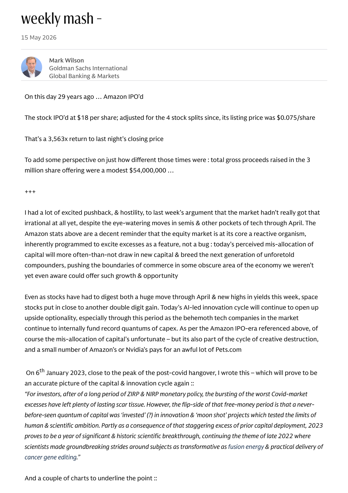
Chart 2
Page 5 | image-block | score 0.621
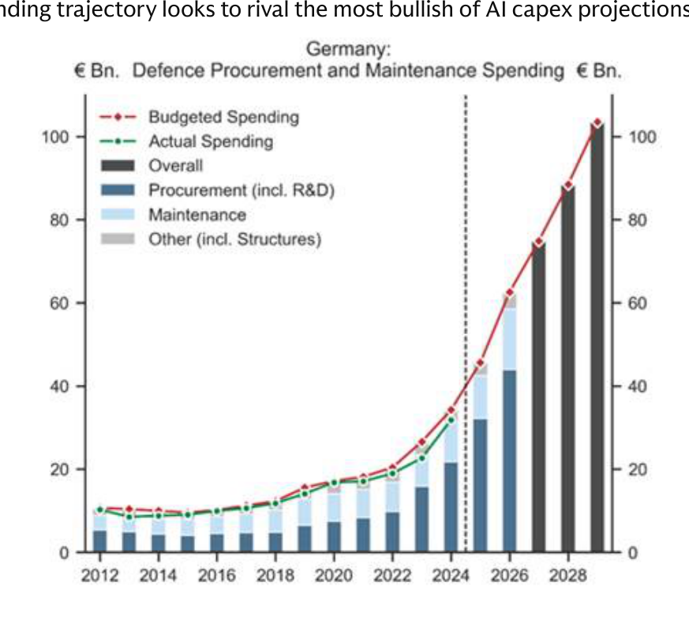
Chart 3
Page 6 | image-block | score 0.675
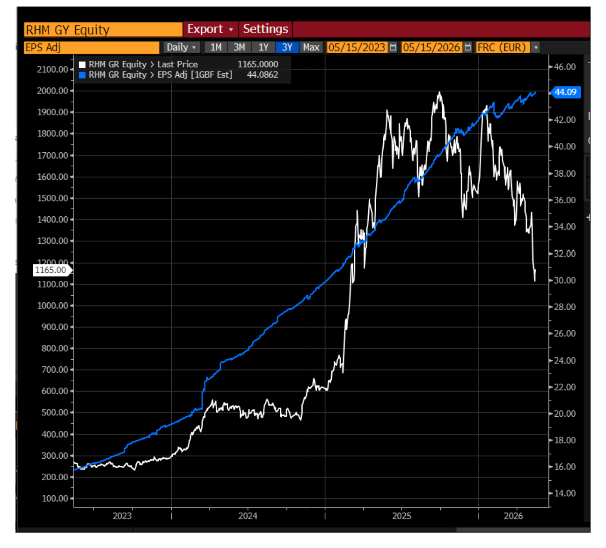
Prime Services Weekly Report 5.15.26
2026-05-17 batch | 3 extracted charts
Chart 1
Page 1 | page-fallback | score 0.775
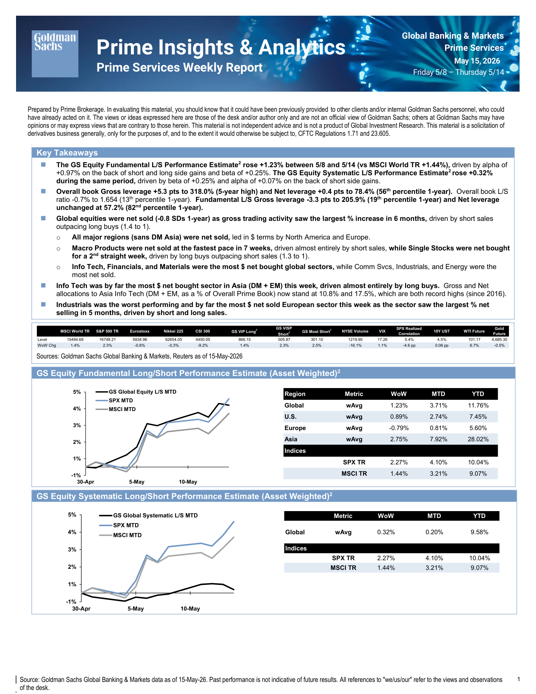
Chart 2
Page 2 | page-fallback | score 0.662

Chart 3
Page 3 | vector-cluster | score 0.668
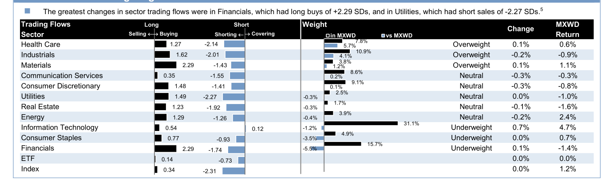
US Equities Weekly Rundown 5-15-26
2026-05-17 batch | 3 extracted charts
Chart 1
Page 1 | page-fallback | score 1.000

Chart 2
Page 10 | image-block | score 0.694
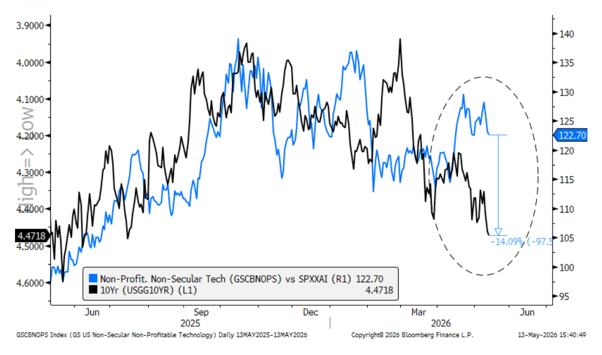
Chart 3
Page 12 | image-block | score 0.732
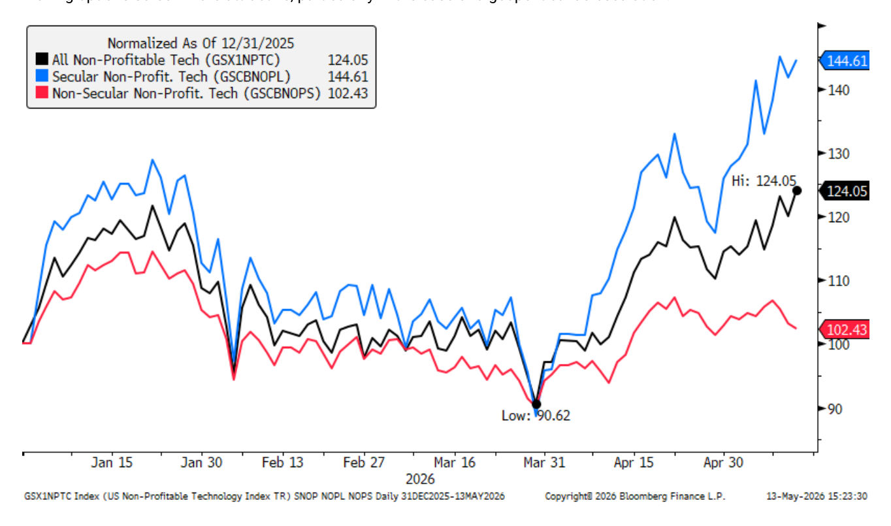
BofA Systematic Flows Monitor Systematic flows stabilize as equity
2026-05-17 batch | 3 extracted charts
Chart 1
Page 5 | vector-cluster | score 0.927
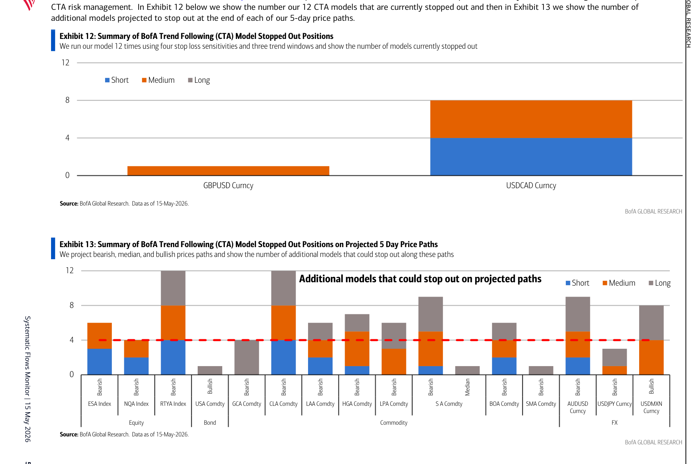
Chart 2
Page 14 | page-fallback | score 1.000

Chart 3
Page 23 | page-fallback | score 1.000
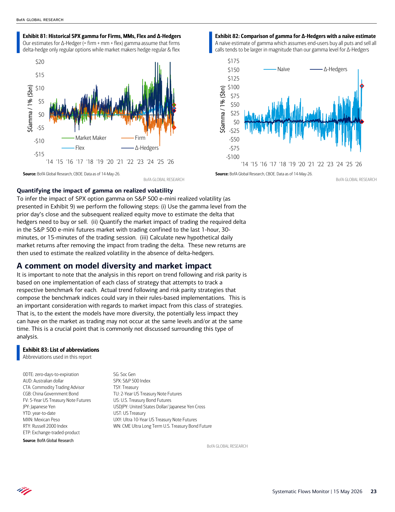
DB Investor Positioning and Flows Tech Comes Full Circle 20260515
2026-05-17 batch | 3 extracted charts
Chart 1
Page 2 | vector-cluster | score 1.025
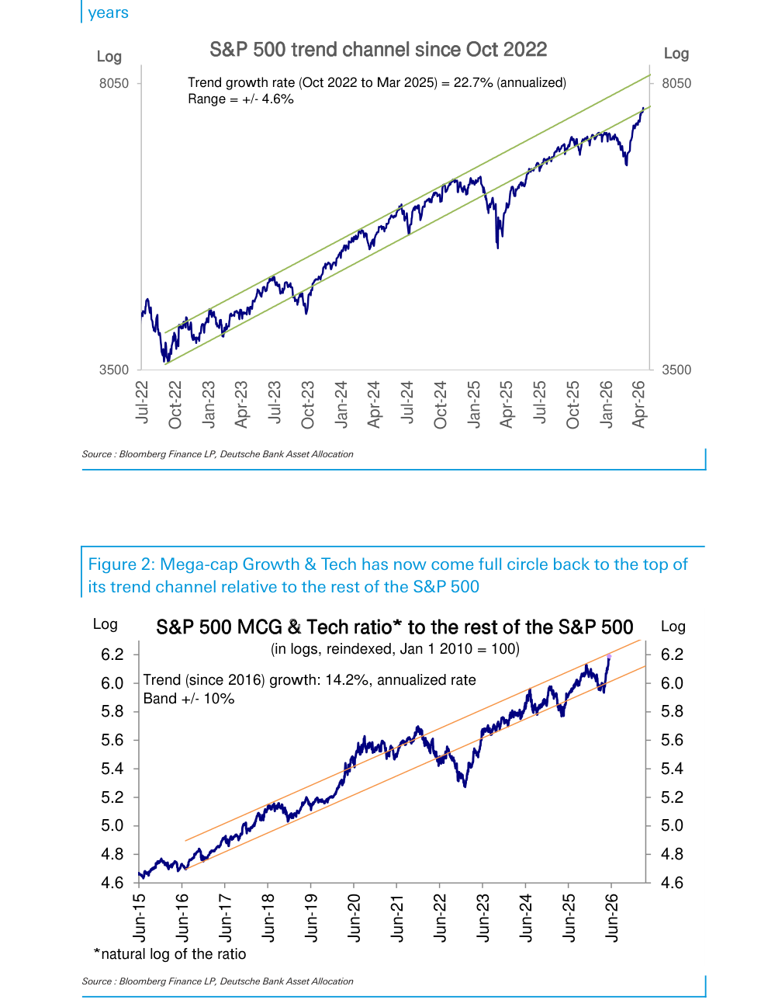
Chart 2
Page 11 | page-fallback | score 1.000

Chart 3
Page 11 | vector-cluster | score 0.975
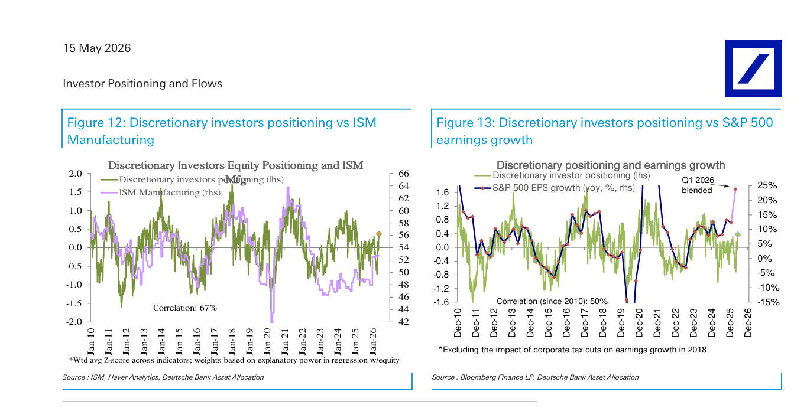
JPM The J P Morgan View Higher for Longer in Oil and Rates Own AI
2026-05-17 batch | 3 extracted charts
Chart 1
Page 3 | page-fallback | score 0.954

Chart 2
Page 3 | vector-cluster | score 0.782

Chart 3
Page 5 | page-fallback | score 0.794